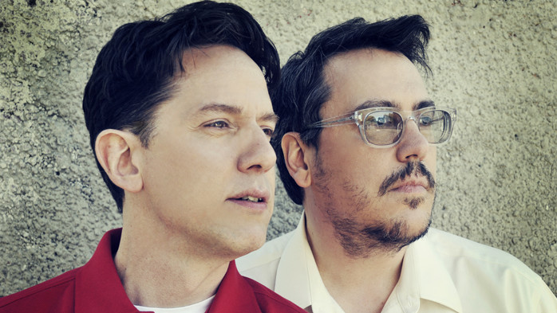

Welcome to my webpage! This page is all about my favorite band of all time, They Might Be Giants.
This band, founded in 1982 by two friends from college, John Linnell and John Flansburgh (yes they are
both named John), has been making music for the span of over 4 decades.

Slider goes here
Their music, which can fall into the categories of alternative, new wave, geek rock, and even children's
music, is quite quirky, containing various somewhat random lyrics and diverse instrumentation.
Due to this, their music is very versatile and can appeal to a wide range of audiences. I believe that
there's at least one song by the band that you've at least heard once *cough cough* Mickey Mouse Clubhouse
*cough cough*, but their band is so much more than that. And I am here to give several suggestions to broaden
your musical selections to be inclusive of TMBG!
Copyright © 2023 | TMBG Music Recs ♫